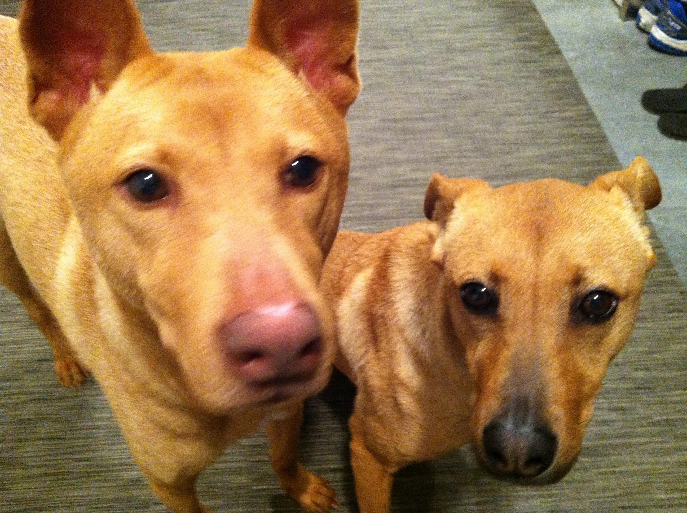

Newest Pictures

"I'm so happy!"
July 19: Me and my sister really enjoy going on walks, but my sister is so shy that most of the time she rely on me to guide her around. We really love each other, as well as all our other family members as well. We are always really excited when our boy comes home and we love getting pet and playing with them both inside and outside. I hope that we can keep on having as much fun as we are now for the rest of the summer and our lives.
"My sister is really shy, and cute!"
"We are both great dogs!"